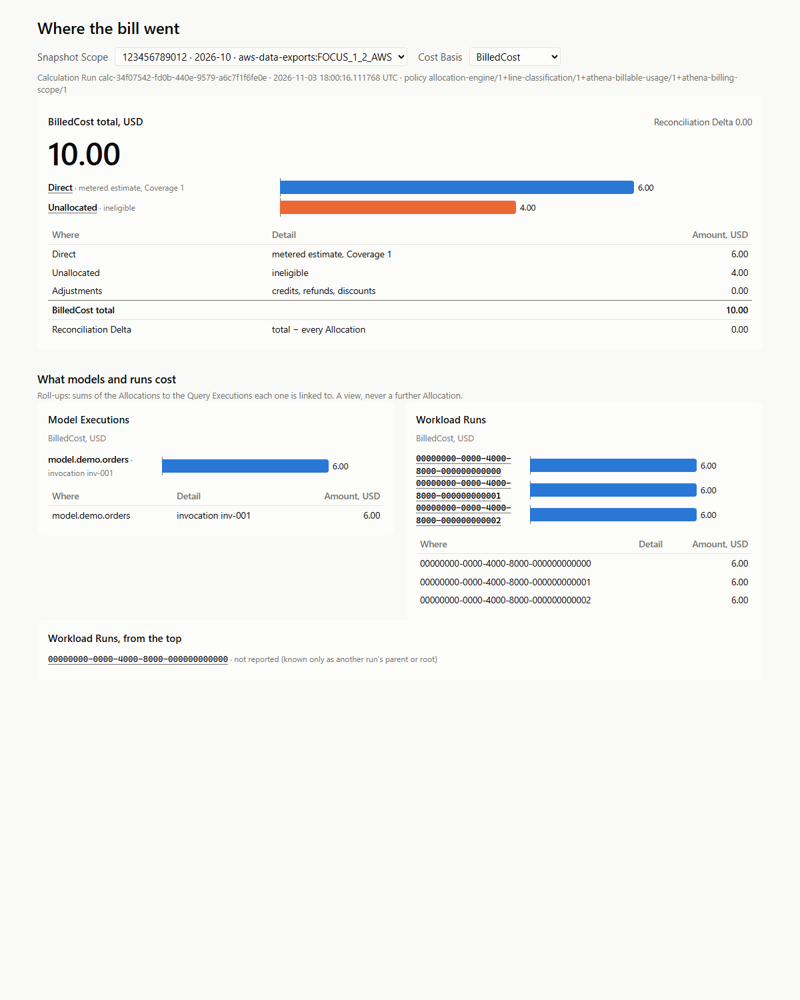
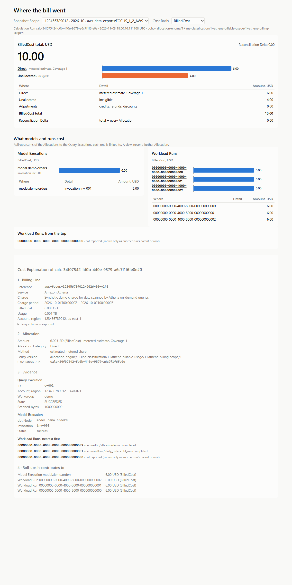
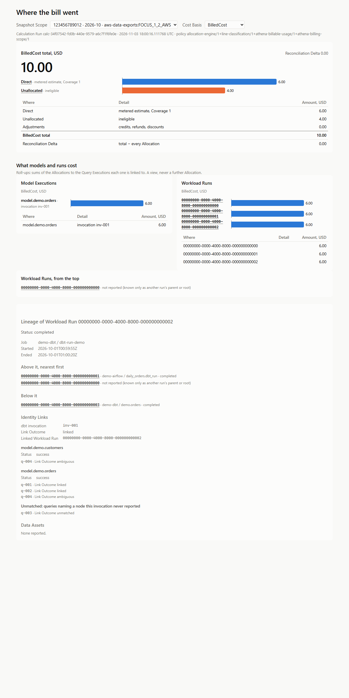

Your first allocation
In this tutorial we load a small bill and the metadata of the workload that ran against it. Then we allocate the bill and follow $10.00 of cost to the Query Execution, dbt Model Execution and Airflow Workload Runs that used it. It takes about five minutes and needs no cloud account.
The inputs are synthetic test fixtures, not real AWS billing records or provider prices.
Every command in steps 1 to 8, and every output marked as checked, is run by a test on each change to data-finops, so what you see in them is what you will see.
Before you start
You need Python 3.12, uv and a source checkout, because the tutorial reads the fixtures in fixtures/:
git clone https://github.com/apmalong/data-finops.git
cd data-finops
uv sync --extra api --frozenThen activate the environment, so that data-finops is on your path: source .venv/bin/activate, or .venv\Scripts\activate on Windows. You can instead start each command below with uv run.
1. Load the bill and the workload
We load four kinds of input into one database file, demo.sqlite:
- one FOCUS Export Snapshot with two Billing Lines, $6.00 of Athena and $4.00 of S3;
- the Athena query history;
- the Airflow and dbt OpenLineage events;
- the dbt artifacts.
data-finops ingest focus fixtures/focus/export-2026-10.json --db demo.sqlite
data-finops ingest athena fixtures/athena/query-executions.json --account-id 123456789012 --region us-east-1 --db demo.sqlite
data-finops ingest athena fixtures/athena/link-outcomes.json --account-id 123456789012 --region us-east-1 --db demo.sqlite
data-finops ingest athena fixtures/athena/link-outcomes-restated.json --account-id 123456789012 --region us-east-1 --db demo.sqlite
data-finops ingest openlineage fixtures/openlineage/events.json --db demo.sqlite
data-finops ingest dbt fixtures/dbt/manifest.json --db demo.sqlite
data-finops ingest dbt fixtures/dbt/run_results.json --db demo.sqlitefocus: new aws-focus-123456789012-2026-10-v1 athena: 2 accepted, 0 duplicates, 0 changed copies, 0 rejected athena: 2 accepted, 0 duplicates, 0 changed copies, 0 rejected athena: 1 accepted, 0 duplicates, 1 changed copies, 0 rejected openlineage: 5 accepted, 0 duplicates, 0 changed copies, 0 unsupported, 0 rejected dbt: stored inv-001 dbt: stored inv-001
Each command says what it stored. The last Athena file restates one Query Execution, so it is counted as a changed copy.
2. Calculate
data-finops calculate --db demo.sqlitecalculate: 123456789012 2026-10-01 aws-data-exports:FOCUS_1_2_AWS: new calc-…
The Calculation Run splits every Billing Line into Allocations and stores them as the current Allocation Snapshot. It prints one line per Snapshot Scope: the account, the Billing Period and the source, then the Calculation Run.
3. See where the bill went
We serve the dashboard and the API over the database, and ask the API for the Cost Summary:
data-finops serve --db demo.sqlite
curl -s 'http://127.0.0.1:8000/v1/costs/summary?cost_basis=BilledCost'serving demo.sqlite at http://127.0.0.1:8000/ (Ctrl+C to stop)
{"summaries":[…"currencies":[{"currency":"USD","billed":"10.00","allocated":[{"category":"direct","confidence":"metered_estimate","amount":"6.00","coverage_min":"1","coverage_max":"1"}],"unallocated":[{"reason":"ineligible","amount":"4.00"}],"adjustments":"0.00","reconciliation_delta":"0.00"}]}],"uncalculated_scopes":[]}
serve keeps running, so run curl in a second terminal. Then open http://127.0.0.1:8000/ in a browser. The dashboard shows the same answer:

- The BilledCost total is 10.00 USD, and the Reconciliation Delta is 0.00: every cent of the bill is in exactly one Allocation.
- Under the title are the Calculation Run, when it ran, and the policy version it used.
4. Follow $6.00 to its Query Execution, Model Execution and Workload Runs
Direct, metered estimate, Coverage 1: 6.00. It is an estimate, so it is always shown with its Confidence and Coverage. We ask which Allocation it is, and what it rolls up to:
curl -s 'http://127.0.0.1:8000/v1/allocations?billing_account_id=123456789012&billing_period=2026-10-01&source=aws-data-exports:FOCUS_1_2_AWS&cost_basis=BilledCost&category=direct'
curl -s 'http://127.0.0.1:8000/v1/rollups?billing_account_id=123456789012&billing_period=2026-10-01&source=aws-data-exports:FOCUS_1_2_AWS&level=model_execution'{"calculation_run_id":"calc-…","total":1,…"target_type":"query_execution","target_id":"q-001","amount":"6.00",…"method":"estimated_metered_share","confidence":"metered_estimate","coverage":"1",…}}]}
{…"items":[{"key":"[\"inv-001\",\"model.demo.orders\"]","totals":[{"currency":"USD","cost_basis":"BilledCost","amount":"6.00"},…]}]}
The whole $6.00 Athena line goes to Query Execution q-001. The line bills exactly the Billable Usage of the Query Executions known in its billing scope, so Coverage is 1 and q-001 gets the line by its Billable Usage. In the dashboard, click Direct to open its Cost Explanation:

It reads in order: the Billing Line as exported, the Allocation, the Evidence nearest first, and the Roll-ups. Model Execution model.demo.orders has $6.00, and so do the dbt Workload Run and the Airflow Workload Runs above it. A Roll-up is a sum of Allocations, never a further Allocation.
5. A Model Execution with no linked Query Execution gets nothing
We ask for the lineage of the dbt run, 00000000-0000-4000-8000-000000000002:
curl -s 'http://127.0.0.1:8000/v1/lineage?run_id=00000000-0000-4000-8000-000000000002'{"run_id":"00000000-0000-4000-8000-000000000002",…"node_id":"model.demo.customers",…"query_execution_id":"q-004",…"outcome":"ambiguous"…
Only q-004 claims model.demo.customers, and its reports disagree, so its Link Outcome is ambiguous. With no Identity Link, nothing is invented for that Model Execution: it has no Roll-up. The dashboard shows the same under Workload Runs:

6. The $4.00 S3 line stays Unallocated
In the Cost Summary from step 3, "unallocated":[{"reason":"ineligible","amount":"4.00"}]. No policy allocates S3 storage yet, so its $4.00 stays Unallocated, named with its reason, and is never spread over the Query Executions. The dashboard shows it in the highlight colour.
7. Load everything again: nothing changes
data-finops ingest focus fixtures/focus/export-2026-10.json --db demo.sqlite
data-finops ingest athena fixtures/athena/query-executions.json --account-id 123456789012 --region us-east-1 --db demo.sqlite
data-finops ingest athena fixtures/athena/link-outcomes.json --account-id 123456789012 --region us-east-1 --db demo.sqlite
data-finops ingest athena fixtures/athena/link-outcomes-restated.json --account-id 123456789012 --region us-east-1 --db demo.sqlite
data-finops ingest openlineage fixtures/openlineage/events.json --db demo.sqlite
data-finops ingest dbt fixtures/dbt/manifest.json --db demo.sqlite
data-finops ingest dbt fixtures/dbt/run_results.json --db demo.sqlite
data-finops calculate --db demo.sqlitefocus: replay aws-focus-123456789012-2026-10-v1 athena: 0 accepted, 2 duplicates, 0 changed copies, 0 rejected athena: 0 accepted, 2 duplicates, 0 changed copies, 0 rejected athena: 0 accepted, 1 duplicates, 0 changed copies, 0 rejected openlineage: 0 accepted, 5 duplicates, 0 changed copies, 0 unsupported, 0 rejected dbt: duplicate inv-001 dbt: duplicate inv-001 calculate: 123456789012 2026-10-01 aws-data-exports:FOCUS_1_2_AWS: replay calc-…
Every input is recognised as one already stored, and the calculation replays the same Calculation Run. The dashboard still shows $10.00. Loading the same inputs twice never counts a cost twice.
8. The provider restates the bill
Providers republish a month when charges change. Here October is republished with $5.00 of S3, as aws-focus-123456789012-2026-10-v2:
data-finops ingest focus fixtures/focus/export-2026-10-restated.json --db demo.sqlite
data-finops calculate --db demo.sqlite
curl -s 'http://127.0.0.1:8000/v1/costs/summary?cost_basis=BilledCost'focus: new aws-focus-123456789012-2026-10-v2
calculate: 123456789012 2026-10-01 aws-data-exports:FOCUS_1_2_AWS: new calc-…
{"summaries":[…"export_snapshot_id":"aws-focus-123456789012-2026-10-v2"},"currencies":[{"currency":"USD","billed":"11.00",…"unallocated":[{"reason":"ineligible","amount":"5.00"}],"adjustments":"0.00","reconciliation_delta":"0.00"}]}],"uncalculated_scopes":[]}
The bill is now $11.00 and the new Calculation Run is current. The previous one is kept, not overwritten: ask for /v1/provenance?calculation_run_id= with the first run's ID, and it answers "is_current": false with superseded_by naming the new run.
What we did
We loaded a bill and the metadata of the workload behind it, and allocated every Billing Line. Then we followed $6.00 through a Query Execution to its Model Execution and Workload Runs, saw a Model Execution with no Evidence get nothing, saw $4.00 stay Unallocated with its reason, and saw a restated bill make a new Allocation Snapshot while keeping the old one.
To try the whole thing in one command, data-finops demo loads every fixture into a temporary database, calculates, and serves the dashboard until you press Ctrl+C.